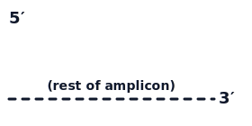

Review the snapback primer design below. Use your browser’s back button to modify the inputs to re-run as necessary. We recommend using 0.5 µM snapback primer, 0.1 µM limiting primer, and 45 cycles of amplification.
Snapback Primer (5′→3′)
Limiting Primer (5′→3′)
Extended snapback primer

- Tail on that matches allele
- Wild-type Tm: °C
- Variant Tm: °C
Alternative Snapback ΔTm Options (based on Wittwer parameters)
| Wild-type match | Variant match | |
|---|---|---|
| Tail on forward primer | — | — |
| Tail on reverse primer | — | — |